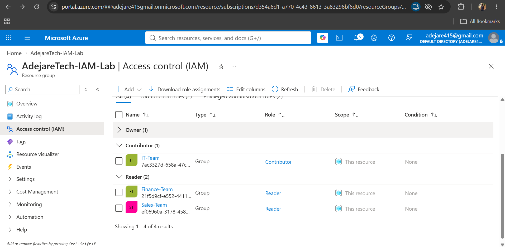
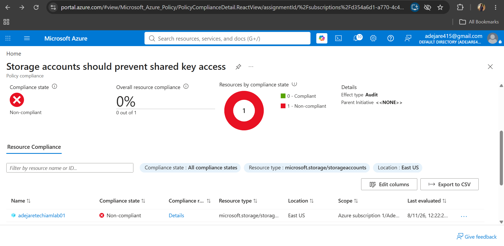
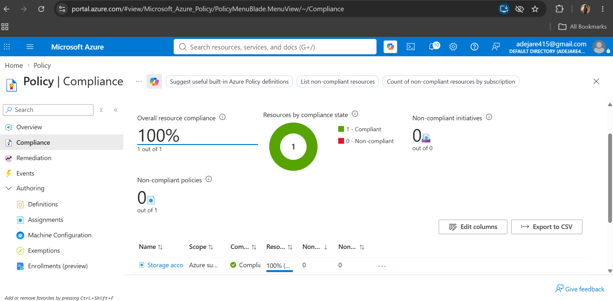

PROJECT 01
Azure IAM Cloud Security Lab
A hands-on cloud security lab focused on identity and access management, least privilege, Azure RBAC and security-policy compliance.
Project Overview
This project was designed as a practical exploration of cloud identity and access management in Microsoft Azure. The lab focused on creating users and groups, assigning role-based permissions, applying least-privilege principles and using Azure Policy to monitor security compliance.
What I Built
Identity Management
Created and managed identities and security groups using Microsoft Entra ID.
Role-Based Access
Configured Azure RBAC assignments to control access based on user roles and responsibilities.
Security Policy
Applied Azure Policy to evaluate resources against defined security requirements.
Security Remediation
Identified a storage security misconfiguration and applied a remediation to restore compliance.
Security Workflow
Deploy Azure resource
Apply security policy
Identify misconfiguration
Remediate and re-evaluate
Security Evidence

IAM Role Assignments
Azure role assignments were configured to control access to cloud resources according to defined user responsibilities and least-privilege principles.

Policy Finding
Azure Policy identified the storage resource as non-compliant because its configuration did not meet the security requirement applied to the environment.

Remediation & Verification
The identified configuration issue was remediated and the resource was re-evaluated by Azure Policy. The final evaluation showed the resource as compliant.
What I Learned
This project strengthened my understanding of how identity, access control and security policies work together in a cloud environment.
One of the key lessons was that configuring a cloud resource securely is only part of the process. Security policies and continuous compliance monitoring are important for identifying configuration drift and reducing risk.
I also gained practical experience with Azure RBAC, least-privilege access, Microsoft Entra ID and Azure Policy, while using security findings to guide remediation.